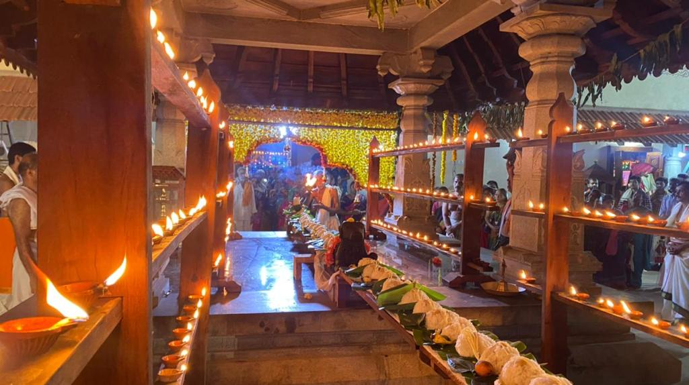

About Our Sacred Temple
Nestled in the serene landscape of Padubelman, the Mahalingeshwara Temple stands as a beacon of spiritual tranquility and divine grace. Dedicated to Lord Shiva in his magnificent form as Mahalingeshwara, this sacred sanctuary has been a source of peace and enlightenment for countless devotees.
Surrounded by lush plantations and blessed with natural beauty, our temple radiates an aura of calm and spiritual energy that touches every soul who enters its hallowed grounds. The temple's architecture reflects the rich cultural heritage of Karnataka while providing a perfect setting for prayer, meditation, and spiritual awakening.
Sacred Rituals & Festivals
Daily Abhisheka
Sacred morning ritual performed with Vedic chants and pure offerings
Each dawn brings the sacred Abhisheka ceremony, where the Shivalinga is bathed with holy water, milk, honey, and other sacred substances. Accompanied by the melodious chanting of ancient Vedic mantras, this ritual purifies the atmosphere and invokes divine blessings for all devotees.

Ranga Pooje
Colorful celebration with intricate rangoli and devotional offerings
A vibrant festival unique to our temple, Ranga Pooje transforms the temple grounds into a canvas of devotion. Intricate rangoli patterns made from colored powders, flower petals, and rice create stunning artworks that honor the divine while bringing the community together in celebration.
Samaradhane
Weekly offering of sacred meals to devotees with devotion and hospitality
Every Monday, the temple observes the divine tradition of Samaradhane — a spiritual and communal gathering where special poojas are conducted in the morning, followed by a sacred Annasantharpane (lunch offering) to all visiting devotees.
The meal is lovingly prepared with devotion and served at 1:00 PM in the temple premises, symbolizing equality, unity, and the blessings of Lord Mahalingeshwara.
Maha Shivaratri
Night-long celebration with continuous chanting and divine offerings
The most sacred night in the Shaivite calendar, Maha Shivaratri transforms our temple into a hub of continuous devotion. Devotees maintain vigil through the night, offering prayers, performing abhisheka, and immersing themselves in the divine energy that pervades the temple throughout this holy night.

Plan Your Sacred Visit
Temple Timings
Morning: 7:00 AM - 12:30 PM
Evening: 5:00 PM - 8:00 PM
Dress Code
Traditional attire is recommended. Please dress modestly as a mark of respect to the divine atmosphere.
Accessibility
Temple is easily accessible by road. Parking available. Special arrangements for elderly and differently-abled devotees.
Virtual Temple Darshan
Experience the divine atmosphere of our temple from anywhere in the world